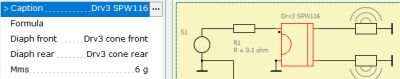

Table of LEM-BEM Links
If you use a Lumped Element Network for driving boundary elements or pressure sources then we need links between components. For example, if a transducer shall receive the value of the area of the membrane
then we can use parameters Diaph Front or Diaph Rear. This
means that the LE-component takes reference to a BE-component.  Each LE-component which has a parameter of diaphragm can be linked to boundary elements or pressure sources. For a larger model with plenty of diaphragms it can be more convenient to edit these links with the help of a dedicated table. This table opens with menu Schematic/Reference Table. To the left we see all available lumped elements with a possible diaphragm link or a link to a pressure source. Make sure the mode of parameter Diaph is set to Reference. At the right hand side of the table we see linked boundary elements or pressure sources. If it is blank then the link is missing. If marked red then the link is invalid. A link would be invalid if the component does not exist, or the link is not unique. The last column to the right can be edited. A look-up table opens if clicked or F2-key is pressed. The look-up-table displays only valid links. If you miss a particular BE-element then it might be already assigned to another LE-component. Sorting works by clicking on the header of the table. Another click would toggle the sorting direction. Apply would assign all links at once. |